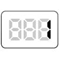

【001】JavaScript用語確認問題

- プロンプト例（NotebookLMで作成）
JavaScriptで完全未経験者が理解しておくべき用語集
問１
JavaScriptで一度代入した値を後から書き換えることができない「定数」を宣言する際に使用するキーワードはどれですか？
A. let
B. function
C. const
D. var
ヒント
- 英語で「一定の」や「不変の」を意味する「Constant」の略称です。
問２
「真 (true)」または「偽 (false)」の2つの値のみを持つデータ型を何と呼びますか？
A. オブジェクト型
B. 文字列型
C. 論理値型（ブーリアン型）
D. 数値型
ヒント
- 条件分岐の判断材料として使われる、ハイかイイエで答えられるような型です。
問３
関数を呼び出す際に、その関数の中で利用するために外部から渡す値を何と呼びますか？
A. 戻り値
B. プロパティ
C. 引数
D. メソッド
ヒント
- 関数という「箱」の中に投げ入れる「材料」に例えられることが多い言葉です。
問４
JavaScriptを用いて、ブラウザに表示されているHTML要素を取得したり変更したりするための仕組みを何と呼びますか？
A. API
B. URL
C. JSON
D. DOM
ヒント
- Document Object Modelの略称です。
問５
配列の最初の要素を指定するときに使用するインデックス番号（添字）はいくつですか？
A. −1
B. 1
C. 10
D. 0
ヒント
- プログラミングの世界では、数は1からではなく何から数え始めることが多いかを思い出してください。
問６
「もし、この条件が正しいならばこの処理を実行する」というように、状況に応じて処理を分ける仕組みを何と呼びますか？
A. 代入
B. ループ
C. 条件分岐
D. 宣言
ヒント
- 分かれ道のように、データの状態によって進む方向を変えるイメージです。
問７
複数のデータを「名前（キー）」と「値（バリュー）」のペアで管理するデータ構造を何と呼びますか？
A. 配列
B. オブジェクト
C. 演算子
D. 引数
ヒント
- プロパティという形で情報を保持する、JavaScriptにおいて非常に重要なデータ形式です。
問８
ボタンのクリックやマウスの移動など、ユーザーがブラウザ上で行ったアクションをきっかけに発生するものを何と呼びますか？
A. コメント
B. メソッド
C. パラメータ
D. イベント
ヒント
- 日本語では「行事」や「出来事」を意味する言葉です。
問９
同じ処理を、指定した回数や条件を満たすまで繰り返し実行する仕組みを何と呼びますか？
A. 分岐
B. ループ
C. 初期化
D. 呼び出し
ｃ
- 輪のようにぐるぐると回るイメージを英語で何と言うか考えてみてください。
問１０
JavaScriptで、右辺の値を左辺の変数に格納する際に使用する記号 = を何と呼びますか？
A. 等価演算子
B. 論理演算子
C. 代入演算子
D. 算術演算子
ヒント
- 「値を入れる」という動作を専門用語で何と言うか考えてみてください。